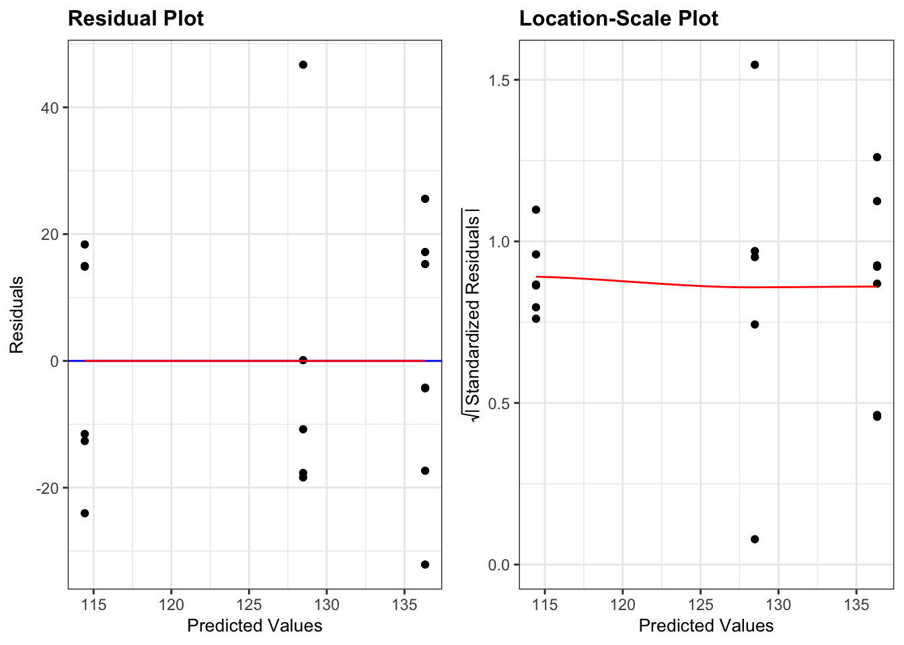
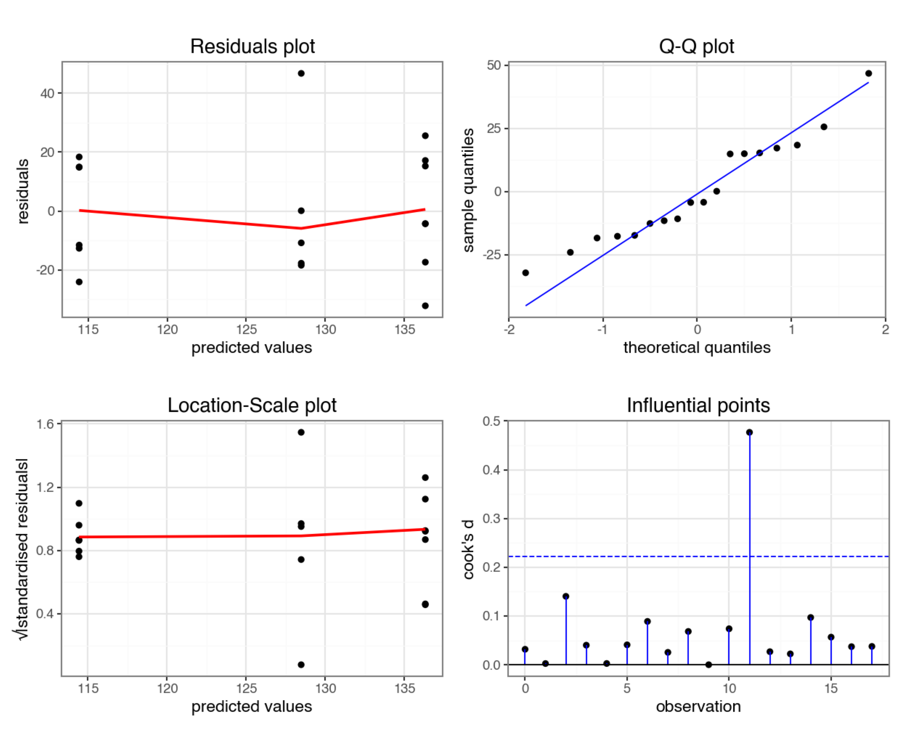

ANOVA
Questions
- How do I analyse multiple samples of continuous data?
- What is an ANOVA?
- How do I check for differences between groups?
Objectives
- Be able to perform an ANOVA in R
- Understand the ANOVA output and evaluate the assumptions
- Understand what post-hoc testing is and how to do this in R
Purpose and aim
Analysis of variance or ANOVA is a test than can be used when we have multiple samples of continuous response data. Whilst it is possible to use ANOVA with only two samples, it is generally used when we have three or more groups. It is used to find out if the samples came from parent distributions with the same mean. It can be thought of as a generalisation of the two-sample Student’s t-test.
Libraries and functions
Libraries
Functions
# Computes summary statistics
rstatix::get_summary_stats()
# Creates diagnostic plots
ggResidpanel::resid_panel()Functions
# Fits a linear model
lm()
# Carries out an ANOVA on a linear model
anova()
# Plots a Q-Q plot for comparison with a normal distribution
qqnorm()
# Adds a comparison line to the Q-Q plot
qqline()
# Performs a Shapiro-Wilk test for normality
shapiro.test()| Libraries | Description |
|---|---|
pandas |
A Python data analysis and manipulation tool. |
pingouin |
A Python module developed to have simple yet exhaustive stats functions. |
plotnine |
The Python equivalent of ggplot2. |
statsmodels |
A Python module for statistical models, conducting tests and statistical data exploration. |
| Functions | Description |
|---|---|
pandas.DataFrame.describe() |
Gives summary statistics. |
pandas.DataFrame.groupby() |
Group DataFrame using a mapper or by a Series of columns |
pandas.DataFrame.head() |
Plots the first few rows of a DataFrame. |
pandas.DataFrame.query() |
Query the columns of a DataFrame with a boolean expression |
pandas.read_csv |
Reads in a .csv file. |
pingouin.anova() |
Performs an analysis of variance. |
pingouin.homoscedasticity() |
Tests equality of variance. |
pingouin.normality() |
Performs the Shapiro-Wilk test for normality. |
statsmodels.formula.api.ols |
Creates a model from a formula and data frame. |
Data and hypotheses
For example, suppose we measure the feeding rate of oyster catchers (shellfish per hour) at three sites characterised by their degree of shelter from the wind, imaginatively called exposed (E), partially sheltered (P) and sheltered (S). We want to test whether the data support the hypothesis that feeding rates don’t differ between locations. We form the following null and alternative hypotheses:
- \(H_0\): The mean feeding rates at all three sites is the same \(\mu E = \mu P = \mu S\)
- \(H_1\): The mean feeding rates are not all equal.
We will use a one-way ANOVA test to check this.
- We use a one-way ANOVA test because we only have one predictor variable (the categorical variable location).
- We’re using ANOVA because we have more than two groups and we don’t know any better yet with respect to the exact assumptions.
The data are stored in the file data/CS2-oystercatcher.csv.
Summarise and visualise
First we read in the data.
# load data
oystercatcher <- read_csv("data/CS2-oystercatcher-feeding.csv")
# and have a look
oystercatcher# A tibble: 120 × 2
site feeding
<chr> <dbl>
1 exposed 12.2
2 exposed 13.1
3 exposed 17.9
4 exposed 13.9
5 exposed 14.1
6 exposed 18.4
7 exposed 15.0
8 exposed 10.3
9 exposed 11.8
10 exposed 12.5
# … with 110 more rowsThe oystercatcher data set contains two columns:
- a
sitecolumn with information on the amount of shelter of the feeding location - a
feedingcolumn containing feeding rates
Next, we get some basic descriptive statistics:
# get some basic descriptive statistics
oystercatcher %>%
group_by(site) %>%
get_summary_stats(type = "common")# A tibble: 3 × 11
site variable n min max median iqr mean sd se ci
<chr> <chr> <dbl> <dbl> <dbl> <dbl> <dbl> <dbl> <dbl> <dbl> <dbl>
1 exposed feeding 40 8.35 18.6 13.9 3.40 13.8 2.44 0.386 0.781
2 partial feeding 40 10.8 23.0 16.9 2.82 17.1 2.62 0.414 0.838
3 sheltered feeding 40 18.9 28.5 23.2 3.79 23.4 2.42 0.383 0.774Finally, we plot the data by site:
# plot the data
oystercatcher %>%
ggplot(aes(x = site, y = feeding)) +
geom_boxplot()
First we read in the data.
# load data
oystercatcher_r <- read.csv("data/CS2-oystercatcher-feeding.csv")
# have a look
head(oystercatcher_r) site feeding
1 exposed 12.17551
2 exposed 13.07392
3 exposed 17.93969
4 exposed 13.89178
5 exposed 14.05166
6 exposed 18.36498The oystercatcher data set contains two columns:
- a
sitecolumn with information on the amount of shelter of the feeding location - a
feedingcolumn containing feeding rates
Next, we get some basic descriptive statistics. We have three groups, so to get the summary statistics by group we do the following:
aggregate(feeding ~ site,
data = oystercatcher_r,
summary) site feeding.Min. feeding.1st Qu. feeding.Median feeding.Mean
1 exposed 8.350801 12.184961 13.946420 13.822899
2 partial 10.795969 15.601927 16.927683 17.081666
3 sheltered 18.856999 21.403028 23.166246 23.355503
feeding.3rd Qu. feeding.Max.
1 15.581748 18.560404
2 18.416708 23.021250
3 25.197096 28.451252Finally, we plot the data by site:
# plot the data by site
boxplot(feeding ~ site,
data = oystercatcher_r)
First, we read in the data.
# load the data
oystercatcher_py = pd.read_csv("data/CS2-oystercatcher-feeding.csv")
# and have a look
oystercatcher_py.head() site feeding
0 exposed 12.175506
1 exposed 13.073917
2 exposed 17.939687
3 exposed 13.891783
4 exposed 14.051663The oystercatcher_py data set contains two columns:
- a
sitecolumn with information on the amount of shelter of the feeding location - a
feedingcolumn containing feeding rates
Next, we get some basic descriptive statistics per group. Here we use the pd.groupby() function to group by site. We only want to have summary statistics for the feeding variable, so we specify that as well:
oystercatcher_py.groupby("site")["feeding"].describe() count mean std ... 50% 75% max
site ...
exposed 40.0 13.822899 2.441974 ... 13.946420 15.581748 18.560404
partial 40.0 17.081666 2.619906 ... 16.927683 18.416708 23.021250
sheltered 40.0 23.355503 2.419825 ... 23.166246 25.197096 28.451252
[3 rows x 8 columns]Finally, we plot the data:
# plot the data
(
ggplot(oystercatcher_py,
aes(x = "site", y = "feeding"))
+ geom_boxplot()
)
Looking at the data, there appears to be a noticeable difference in feeding rates between the three sites. We would probably expect a reasonably significant statistical result here.
Assumptions
To use an ANOVA test, we have to make three assumptions:
- The parent distributions from which the samples are taken are normally distributed
- Each data point in the samples is independent of the others
- The parent distributions should have the same variance
In a similar way to the two-sample tests we will consider the normality and equality of variance assumptions both using tests and by graphical inspection (and ignore the independence assumption).
Normality
First we perform a Shapiro-Wilk test on each site separately.
We take the data, and group_by() site:
# Shapiro-Wilk test on each site
oystercatcher %>%
group_by(site) %>%
shapiro_test(feeding)Unstack the data and perform a Shapiro-Wilk test on each group separately.
# create a new object (a list) that contains the unstacked data
uns_oystercatcher <- unstack(oystercatcher_r,
form = feeding ~ site)
# have a look at the data
head(uns_oystercatcher) exposed partial sheltered
1 12.17551 15.20345 23.87176
2 13.07392 16.53239 21.41133
3 17.93969 13.64547 22.46681
4 13.89178 23.02125 23.00843
5 14.05166 20.39774 27.85932
6 18.36498 14.03391 22.09400Next, we perform the Shapiro-Wilk test on each group:
shapiro.test(uns_oystercatcher$exposed)
Shapiro-Wilk normality test
data: uns_oystercatcher$exposed
W = 0.98859, p-value = 0.953shapiro.test(uns_oystercatcher$partial)
Shapiro-Wilk normality test
data: uns_oystercatcher$partial
W = 0.98791, p-value = 0.9398shapiro.test(uns_oystercatcher$sheltered)
Shapiro-Wilk normality test
data: uns_oystercatcher$sheltered
W = 0.97511, p-value = 0.5136We use the pg.normality() function to calculate the statistic. This requires:
- the
dvdependent variable (feedingin our case) - the
groupvariable (site) - and some data
pg.normality(dv = "feeding",
group = "site",
data = oystercatcher_py) W pval normal
exposed 0.988587 0.953037 True
partial 0.987907 0.939830 True
sheltered 0.975106 0.513547 TrueWe can see that all three groups appear to be normally distributed which is good.
For ANOVA however, considering each group in turn is often considered quite excessive and, in most cases, it is sufficient to consider the normality of the combined set of residuals from the data. We’ll explain residuals properly in the next session but effectively they are the difference between each data point and its group mean. The residuals can be obtained directly from a linear model fitted to the data.
So, we create a linear model, extract the residuals and check their normality:
# define the model
lm_oystercatcher <- lm(feeding ~ site,
data = oystercatcher)
# extract the residuals
resid_oyster <- residuals(lm_oystercatcher)
# perform Shapiro-Wilk test on residuals
resid_oyster %>%
shapiro_test()# A tibble: 1 × 3
variable statistic p.value
<chr> <dbl> <dbl>
1 . 0.994 0.857# define the model
lm_oystercatcher_r <- lm(feeding ~ site,
data = oystercatcher_r)
# extract the residuals
resid_oyster_r <- residuals(lm_oystercatcher_r)
# perform Shapiro-Wilk test on residuals
shapiro.test(resid_oyster_r)
Shapiro-Wilk normality test
data: resid_oyster_r
W = 0.99355, p-value = 0.8571Unfortunately pingouin does not have a straightforward way of extracting residuals (if you know more, please raise an issue!).
To get our residuals we use statsmodels, a module that provides functions for statistical models. We’ll be using this in upcoming sessions, so you’ll have a head start!
At this point you shouldn’t concern yourself too much with the exact syntax, just run it an have a look.
We need to import a few extra modules. First, we load the statsmodels.api module, which contains an OLS() function (Ordinary Least Squares - the equivalent of the lm() function in R).
We also import stats.models.formula.api so we can use the formula notation in our linear model. We define the formula as formula= "feeding ~ C(site)" with C conveying that the site variable is a category. Lastly we can .fit() the model.
If you’re familiar with this stuff then you can look at the model itself by running summary(lm_oystercatcher_py). But we’ll cover all of this in later sessions.
We load the modules, define a linear model, create a fit() and we get the residuals from the linear model fit with .resid.
import statsmodels.api as sm
import statsmodels.formula.api as smf# create a linear model
model = smf.ols(formula= "feeding ~ C(site)", data = oystercatcher_py)
# and get the fitted parameters of the model
lm_oystercatcher_py = model.fit()# get the residuals from the model fit
# and perform Shapiro-Wilk test
pg.normality(lm_oystercatcher_py.resid) W pval normal
0 0.993546 0.85703 TrueAgain, we can see that the combined residuals from all three groups appear to be normally distributed (which is as we would have expected given that they were all normally distributed individually!)
Equality of Variance
We now test for equality of variance using Bartlett’s test (since we’ve just found that all of the individual groups are normally distributed).
Perform Bartlett’s test on the data:
# check equality of variance
bartlett.test(feeding ~ site,
data = oystercatcher)
Bartlett test of homogeneity of variances
data: feeding by site
Bartlett's K-squared = 0.29598, df = 2, p-value = 0.8624Where the relevant p-value is given on the 3rd line. Here we see that each group appears to have the same variance.
# check equality of variance
bartlett.test(feeding ~ site,
data = oystercatcher)
Bartlett test of homogeneity of variances
data: feeding by site
Bartlett's K-squared = 0.29598, df = 2, p-value = 0.8624Where the relevant p-value is given on the 3rd line. Here we see that each group appears to have the same variance.
We use the homoscedasticity() function from pingouin (homoscedasticity is another way of describing equality of variance). The default method is levene, so we need to specify that we want to use bartlett.
pg.homoscedasticity(dv = "feeding",
group = "site",
method = "bartlett",
data = oystercatcher_py) T pval equal_var
bartlett 0.295983 0.862439 TrueWhere the relevant p-value is given in the pval column. Here we see that each group appears to have the same variance.
Graphical interpretation and diagnostic plots
Assessing assumptions via these tests can be cumbersome, but also a bit misleading at times. It reduces the answer to the question “is the assumption met?” to a yes/no, based on some statistic and associated p-value.
This does not convey that things aren’t always so clear-cut and that there is a lot of grey area that we need to navigate. As such, assessing assumptions through graphical means - using diagnostic plots - is often preferred.
In the first session we already created diagnostic Q-Q plots directly from our data, using stat_qq() and stat_qq_line(). For more specific plots this becomes a bit cumbersome. There is an option to create ggplot-friendly diagnostic plots, using the ggResidPanel package.
Let’s create the diagnostic plots we’re interested in using ggResidPanel:
lm_oystercatcher %>%
resid_panel(plots = c("resid", "qq", "ls", "cookd"),
smoother = TRUE)
- The top left graph plots the Residuals plot. If the data are best explained by a linear line then there should be a uniform distribution of points above and below the horizontal blue line (and if there are sufficient points then the red line, which is a smoother line, should be on top of the blue line). This plot looks pretty good.
- The top right graph shows the Q-Q plot which allows a visual inspection of normality. If the residuals are normally distributed, then the points should lie on the diagonal blue line. This plot looks good.
- The bottom left Location-Scale graph allows us to investigate whether there is any correlation between the residuals and the predicted values and whether the variance of the residuals changes significantly. If not, then the red line should be horizontal. If there is any correlation or change in variance then the red line will not be horizontal. This plot is fine.
- The last graph shows the Cook’s distance and tests if any one point has an unnecessarily large effect on the fit. A rule of thumb is that if any value is larger than 1.0, then it might have a large effect on the model. If not, then no point has undue influence. This plot is good. There are different ways to determine the threshold (apart from simply setting it to 1) and in this plot the blue dashed line is at
4/n, withnbeing the number of samples. At this threshold there are some data points that may be influential, but I personally find this threshold rather strict.
We can create the default diagnostic plots in base R by simply plotting the lm object.

The second line creates four diagnostic plots.
- The top left graph plots the Residuals vs Fitted. If the data are best explained by a linear line then there should be a uniform distribution of points above and below the horizontal red line. This plot looks pretty good.
- The top right graph shows the Normal Q-Q plot which allows a visual inspection of normality. If the residuals are normally distributed, then the points should lie on the diagonal dotted line. This plot looks good.
- The bottom left Scale-Location graph allows us to investigate whether there is any correlation between the residuals and the predicted values and whether the variance of the residuals changes significantly. If not, then the red line should be horizontal. If there is any correlation or change in variance then the red line will not be horizontal. This plot is fine.
- The bottom right Residuals vs Factor Levels plot shows the residuals for each group (= site). This plot is only displayed if there are equal number of observations in each group and we’ll explain more about this in the next session.
Unfortunately Python doesn’t provide a convenient way of displaying the same diagnostic plots as R does.
I created a function dgplots() (which stands for Diagnostic Plots, very original I know…) that does this for you. All you need to do is create a linear model, get the fit and feed that to the dgplots() function.
You can of course plot the model values yourself by extracting them from the linear model fit, but this should provide a convenient way to avoid that kind of stuff.
dgplots(lm_oystercatcher_py)
- The top left graph plots the Residuals plot. If the data are best explained by a linear line then there should be a uniform distribution of points above and below the horizontal blue line (and if there are sufficient points then the red line, which is a smoother line, should be on top of the blue line). This plot looks pretty good.
- The top right graph shows the Q-Q plot which allows a visual inspection of normality. If the residuals are normally distributed, then the points should lie on the diagonal blue line. This plot looks good.
- The bottom left Location-Scale graph allows us to investigate whether there is any correlation between the residuals and the predicted values and whether the variance of the residuals changes significantly. If not, then the red line should be horizontal. If there is any correlation or change in variance then the red line will not be horizontal. This plot is fine.
- The last graph shows the Influential points and tests if any one point has an unnecessarily large effect on the fit. Here we’re using the Cook’s distance as a measure. A rule of thumb is that if any value is larger than 1.0, then it might have a large effect on the model. If not, then no point has undue influence. This plot is good. There are different ways to determine the threshold (apart from simply setting it to 1) and in this plot the blue dashed line is at
4/n, withnbeing the number of samples. At this threshold there are some data points that may be influential, but I personally find this threshold rather strict.
We can see that these graphs are very much in line with what we’ve just looked at using the test, which is reassuring. The groups all appear to have the same spread of data, and the Q-Q plot shows that the assumption of normality is alright.
At this stage, I should point out that I nearly always stick with the graphical method for assessing the assumptions of a test. Assumptions are rarely either completely met or not met and there is always some degree of personal assessment.
Whilst the formal statistical tests (like Shapiro-Wilk) are technically fine, they can often create a false sense of things being absolutely right or wrong in spite of the fact that they themselves are still probabilistic statistical tests. In these exercises we are using both approaches whilst you gain confidence and experience in interpreting the graphical output and whilst it is absolutely fine to use both in the future I would strongly recommend that you don’t rely solely on the statistical tests in isolation.
Implement and interpret the test
Perform an ANOVA test on the data:
anova(lm_oystercatcher)Analysis of Variance Table
Response: feeding
Df Sum Sq Mean Sq F value Pr(>F)
site 2 1878.02 939.01 150.78 < 2.2e-16 ***
Residuals 117 728.63 6.23
---
Signif. codes: 0 '***' 0.001 '**' 0.01 '*' 0.05 '.' 0.1 ' ' 1This takes the linear model (i.e. finds the means of the three groups and calculates a load of intermediary data that we need for the statistical analysis) and stores this information in an R object (which we’ve called lm_oystercatcher, but which you can call what you like).
In the output:
- The 1st line just tells you the that this is an ANOVA test
- The 2nd line tells you what the response variable is (in this case feeding)
- The 3rd, 4th and 5th lines are an ANOVA table which contain some useful values:
- The
Dfcolumn contains the degrees of freedom values on each row, 2 and 117 (which we can use for the reporting) - The
Fvalue column contains the F statistic, 150.78 (which again we’ll need for reporting). - The p-value is 2.2e-16 and is the number directly under the
Pr(>F)on the 4th line (to be precise, it is 4.13e-33 but anything smaller than 2.2e-16 gets reported as< 2.2e-16). - The other values in the table (in the
Sum SqandMean Sq) columns are used to calculate the F statistic itself and we don’t need to know these.
- The
- The 6th line has some symbolic codes to represent how big (small) the p-value is; so, a p-value smaller than 0.001 would have a *** symbol next to it (which ours does). Whereas if the p-value was between 0.01 and 0.05 then there would simply be a * character next to it, etc. Thankfully we can all cope with actual numbers and don’t need a short-hand code to determine the reporting of our experiments (please tell me that’s true…!)
anova(lm_oystercatcher_r)Analysis of Variance Table
Response: feeding
Df Sum Sq Mean Sq F value Pr(>F)
site 2 1878.02 939.01 150.78 < 2.2e-16 ***
Residuals 117 728.63 6.23
---
Signif. codes: 0 '***' 0.001 '**' 0.01 '*' 0.05 '.' 0.1 ' ' 1This takes the linear model (i.e. finds the means of the three groups and calculates a load of intermediary data that we need for the statistical analysis) and stores this information in an R object (which we’ve called lm_oystercatcher_r, but which you can call what you like).
In the output:
- The 1st line just tells you the that this is an ANOVA test
- The 2nd line tells you what the response variable is (in this case feeding)
- The 3rd, 4th and 5th lines are an ANOVA table which contain some useful values:
- The
Dfcolumn contains the degrees of freedom values on each row, 2 and 117 (which we can use for the reporting) - The
Fvalue column contains the F statistic, 150.78 (which again we’ll need for reporting). - The p-value is 2.2e-16 and is the number directly under the
Pr(>F)on the 4th line (to be precise, it is 4.13e-33 but anything smaller than 2.2e-16 gets reported as< 2.2e-16). - The other values in the table (in the
Sum SqandMean Sq) columns are used to calculate the F statistic itself and we don’t need to know these. - The 6th line has some symbolic codes to represent how big (small) the p-value is; so, a p-value smaller than 0.001 would have a *** symbol next to it (which ours does). Whereas if the p-value was between 0.01 and 0.05 then there would simply be a * character next to it, etc. Thankfully we can all cope with actual numbers and don’t need a short-hand code to determine the reporting of our experiments (please tell me that’s true…!)
There are different ways of conducting an ANOVA in Python, with scipy.stats proving an option. However, I find that anova() function in pingouin provides the easiest and most-detailed option to do this.
It takes the following arguments:
-
dv: dependent variable (response variable; in our casefeeding) -
between: between-subject factor (predictor variable; in our casesite) -
data: which function doesn’t!? -
detailed: optionalTrueorFalse, we’re setting it toTruebecause we like to know what we’re doing!
pg.anova(dv = "feeding",
between = "site",
data = oystercatcher_py,
detailed = True) Source SS DF MS F p-unc np2
0 site 1878.015371 2 939.007685 150.782449 4.128088e-33 0.720473
1 Within 728.625249 117 6.227566 NaN NaN NaNThis creates a linear model based on the data, i.e. finds the means of the three groups and calculates a load of intermediary data that we need for the statistical analysis.
In the output:
-
Source: Factor names - in our case these are the different sites (site) -
SS: Sums of squares (we’ll get to that in a bit) -
DF: Degrees of freedom (at the moment only used for reporting) -
MS: Mean squares -
F: Our F-statistic -
p-unc: p-value (uncstands for “uncorrected” - more on multiple testing correction later) -
np2: Partial eta-square effect sizes (more on this later)
Again, the p-value is what we’re most interested in here and shows us the probability of getting samples such as ours if the null hypothesis were actually true.
Since the p-value is very small (much smaller than the standard significance level of 0.05) we can say “that it is very unlikely that these three samples came from the same parent distribution” and as such we can reject our null hypothesis and state that:
A one-way ANOVA showed that the mean feeding rate of oystercatchers differed significantly between locations (F = 150.78, df = 2, 117, p = 4.13e-33).
Post-hoc testing (Tukey’s rank test)
One drawback with using an ANOVA test is that it only tests to see if all of the means are the same, and if we get a significant result using ANOVA then all we can say is that not all of the means are the same, rather than anything about how the pairs of groups differ. For example, consider the following box plot for three samples.
# load the data
tukey <- read_csv("data/CS2-tukey.csv")
tukey# A tibble: 60 × 2
response group
<dbl> <chr>
1 1.58 sample1
2 0.380 sample1
3 -0.997 sample1
4 -0.771 sample1
5 0.169 sample1
6 -0.698 sample1
7 -0.167 sample1
8 1.38 sample1
9 -0.839 sample1
10 -1.05 sample1
# … with 50 more rowstukey %>%
ggplot(aes(x = group, y = response)) +
geom_boxplot()
Each group is a random sample of 20 points from a normal distribution with variance 1. Groups 1 and 2 come from a parent population with mean 0 whereas group 3 come from a parent population with mean 2. The data clearly satisfy the assumptions of an ANOVA test.
Read in data and plot
# load the data
tukey <- read_csv("data/CS2-tukey.csv")Rows: 60 Columns: 2
── Column specification ────────────────────────────────────────────────────────
Delimiter: ","
chr (1): group
dbl (1): response
ℹ Use `spec()` to retrieve the full column specification for this data.
ℹ Specify the column types or set `show_col_types = FALSE` to quiet this message.# have a look at the data
tukey# A tibble: 60 × 2
response group
<dbl> <chr>
1 1.58 sample1
2 0.380 sample1
3 -0.997 sample1
4 -0.771 sample1
5 0.169 sample1
6 -0.698 sample1
7 -0.167 sample1
8 1.38 sample1
9 -0.839 sample1
10 -1.05 sample1
# … with 50 more rows# plot the data
tukey %>%
ggplot(aes(x = group, y = response)) +
geom_boxplot()

Test for a significant difference in group means
# create a linear model
lm_tukey <- lm(response ~ group,
data = tukey)
# perform an ANOVA
anova(lm_tukey)Analysis of Variance Table
Response: response
Df Sum Sq Mean Sq F value Pr(>F)
group 2 33.850 16.9250 20.16 2.392e-07 ***
Residuals 57 47.854 0.8395
---
Signif. codes: 0 '***' 0.001 '**' 0.01 '*' 0.05 '.' 0.1 ' ' 1Here we have a p-value of 2.39 \(\times\) 10-7 and so the test has very conclusively rejected the hypothesis that all means are equal.
However, this was not due to all of the sample means being different, but rather just because one of the groups is very different from the others. In order to drill down and investigate this further we use a new test called Tukey’s range test (or Tukey’s honest significant difference test – this always makes me think of some terrible cowboy/western dialogue).
This will compare all of the groups in a pairwise fashion and reports on whether a significant difference exists.
Performing Tukey’s test
# A tibble: 3 × 9
term group1 group2 null.value estimate conf.low conf.high p.adj
* <chr> <chr> <chr> <dbl> <dbl> <dbl> <dbl> <dbl>
1 group sample1 sample2 0 0.304 -0.393 1.00 0.55
2 group sample1 sample3 0 1.72 1.03 2.42 0.000000522
3 group sample2 sample3 0 1.42 0.722 2.12 0.0000246
# … with 1 more variable: p.adj.signif <chr>The tukey_hsd() function takes our linear model (lm_tukey) as its input. The output is a pair-by-pair comparison between the different groups (samples 1 to 3). We are interested in the p.adj column, which gives us the adjusted p-value. The null hypothesis in each case is that there is no difference in the mean between the two groups.
Tukey multiple comparisons of means
95% family-wise confidence level
Fit: aov(formula = response ~ group, data = tukey)
$group
diff lwr upr p adj
sample2-sample1 0.3037563 -0.3934982 1.001011 0.5498005
sample3-sample1 1.7233591 1.0261047 2.420614 0.0000005
sample3-sample2 1.4196028 0.7223484 2.116857 0.0000246The first argument repeats our ANOVA using a different function aov(). We store the output of this function in an R object called aov_tukey. Note that the TukeyHSD() function takes the output of the aov() function as its argument and not the raw data.
The bottom three lines contain the information that we want. The final column of each (entitled p adj) is the p-value that we’re looking for. The null hypothesis in each case is that there is no difference in the mean between the two groups.
As we can see that there isn’t a significant difference between sample1 and sample2 but the 2nd and 3rd rows show that there is a significant difference between sample1 and sample3, as well as sample2 and sample3. This matches with what we expected based on the box plot.
Assumptions
When to use Tukey’s range test is a matter of debate (strangely enough a lot of statistical analysis techniques are currently matters of opinion rather than mathematical fact – it does explain a little why this whole field appears so bloody confusing!)
- Some people claim that we should only perform Tukey’s range test (or any other post-hoc tests) if the preceding ANOVA test showed that there was a significant difference between the groups and that if the ANOVA test had not shown any significant differences between groups then we would have to stop there.
- Other people say that this is rubbish and we can do whatever we like as long as we tell people what we did.
The background to this is rather involved but one of the reasons for this debate is to prevent so-called data-dredging or p-hacking. This is where scientists/analysts are so fixated on getting a “significant” result that they perform a huge variety of statistical techniques until they find one that shows that their data is significant (this was a particular problem in psychological studies for while – not to point fingers though, they are working hard to sort their stuff out. Kudos!).
Whether you should use post-hoc testing or not will depend on your experimental design and the questions that you’re attempting to answer.
Tukey’s range test, when we decide to use it, requires the same three assumptions as an ANOVA test:
- Normality of distributions
- Equality of variance between groups
- Independence of observations
Exercise: Lobster weight
Juvenile lobsters in aquaculture were grown on three different diets (fresh mussels, semi-dry pellets and dry flakes). After nine weeks, their wet weight was:
| Mussels | Pellets | Flakes |
|---|---|---|
| 151.6 | 117.7 | 101.8 |
| 132.1 | 110.8 | 102.9 |
| 104.2 | 128.6 | 90.4 |
| 153.5 | 110.1 | 132.8 |
| 132.0 | 175.2 | 129.3 |
| 119.0 | NA | 129.4 |
| 161.9 | NA | NA |
Is there any evidence that diet affects the growth rate of lobsters?
- Write down the null and alternative hypotheses
- Import the data into R from
data/CS2-lobsters.csv - Summarise and visualise the data
- Check the assumptions using appropriate tests and graphical analyses
- Perform an ANOVA test
- Write down a sentence that summarise the results that you have found
- Perform a post-hoc test and report the findings
Hypotheses
\(H_0\) : all means are equal
\(H_1\) : not all means are equal
Import Data, summarise and visualise
# load the data
lobsters <- read_csv("data/CS2-lobsters.csv")
# look at the data
lobsters# A tibble: 18 × 3
id weight diet
<dbl> <dbl> <chr>
1 1 152. Mussels
2 2 132. Mussels
3 3 104. Mussels
4 4 154. Mussels
5 5 132 Mussels
6 6 119 Mussels
7 7 162. Mussels
8 8 118. Pellets
9 9 111. Pellets
10 10 129. Pellets
11 11 110. Pellets
12 12 175. Pellets
13 13 102. Flakes
14 14 103. Flakes
15 15 90.4 Flakes
16 16 133. Flakes
17 17 129. Flakes
18 18 129. Flakes The data have a unique id column, which we don’t need any summary statistics for, so we deselect it:
# create some summary statistics
lobsters %>%
select(-id) %>%
group_by(diet) %>%
get_summary_stats(type = "common")# A tibble: 3 × 11
diet variable n min max median iqr mean sd se ci
<chr> <chr> <dbl> <dbl> <dbl> <dbl> <dbl> <dbl> <dbl> <dbl> <dbl>
1 Flakes weight 6 90.4 133. 116. 27.3 114. 18.2 7.42 19.1
2 Mussels weight 7 104. 162. 132. 27.0 136. 20.6 7.79 19.1
3 Pellets weight 5 110. 175. 118. 17.8 128. 27.2 12.1 33.7Next, we visualise the data:
lobsters %>%
ggplot(aes(x = diet, y = weight)) +
geom_boxplot()
lobsters <- read.csv("data/CS2-lobsters.csv")Let’s look at the data and see what we can see.
id weight diet
1 1 151.6 Mussels
2 2 132.1 Mussels
3 3 104.2 Mussels
4 4 153.5 Mussels
5 5 132.0 Mussels
6 6 119.0 Mussels
7 7 161.9 Mussels
8 8 117.7 Pellets
9 9 110.8 Pellets
10 10 128.6 Pellets
11 11 110.1 Pellets
12 12 175.2 Pellets
13 13 101.8 Flakes
14 14 102.9 Flakes
15 15 90.4 Flakes
16 16 132.8 Flakes
17 17 129.3 Flakes
18 18 129.4 Flakesaggregate(weight ~ diet, data = lobsters, summary) diet weight.Min. weight.1st Qu. weight.Median weight.Mean weight.3rd Qu.
1 Flakes 90.4000 102.0750 116.1000 114.4333 129.3750
2 Mussels 104.2000 125.5000 132.1000 136.3286 152.5500
3 Pellets 110.1000 110.8000 117.7000 128.4800 128.6000
weight.Max.
1 132.8000
2 161.9000
3 175.2000boxplot(weight ~ diet, data = lobsters)
As always we use the plot and summary to assess three things:
- Did we load the data in properly?
- We see three groups with reasonable values. There aren’t any data points that are obviously wrong (negative, zero or massively big) and we have the right number of groups. So it looks as if we didn’t do anything obviously wrong.
- What do we expect as a result of a statistical test?
- Whilst the
Musselsgroup does look higher than the other two groups,PelletsandFlakesappear almost identical in terms of average values, and there’s quite a bit of overlap with theMusselsgroup. A non-significant result is the most likely answer, and I would be surprised to see a significant p-value - especially given the small sample size that we have here.
- What do we think about assumptions?
- The groups appear mainly symmetric (although
Pelletsis a bit weird) and so we’re not immediately massively worried about lack of normality. Again,FlakesandMusselsappear to have very similar variances but it’s a bit hard to decide what’s going on withPellets.It’s hard to say what’s going on with the assumptions and so I’ll wait and see what the other tests say.
Explore Assumptions
We’ll explore the assumption of normality and equality of variance, assuming that the data are independent.
Normality
We’ll be really thorough here and consider the normality of each group separately and jointly using the Shapiro-Wilk test, as well as looking at the Q-Q plot. In reality, and after these examples , we’ll only use the Q-Q plot.
First, we perform the Shapiro-Wilk test on the individual groups:
# Shapiro-Wilk on lobster groups
lobsters %>%
group_by(diet) %>%
shapiro_test(weight)# A tibble: 3 × 4
diet variable statistic p
<chr> <chr> <dbl> <dbl>
1 Flakes weight 0.844 0.140
2 Mussels weight 0.948 0.710
3 Pellets weight 0.767 0.0425Flakes and Mussels are fine, but, as we suspected from earlier, Pellets appears to have a marginally significant Normality test result.
Let’s look at the Shapiro-Wilk test for all of the data together:
# create a linear model
lm_lobsters <- lm(weight ~ diet,
data = lobsters)
# extract the residuals
resid_lobsters <- residuals(lm_lobsters)
# and perform the Shapiro-Wilk test on the residuals
resid_lobsters %>%
shapiro_test()# A tibble: 1 × 3
variable statistic p.value
<chr> <dbl> <dbl>
1 . 0.948 0.391This on the other hand says that everything is fine. Let’s look at Q-Q plot.
# Q-Q plots
lm_lobsters %>%
resid_panel(plots = "qq")
Here, I’ve used an extra argument to the normal diagnostic plots call. The default option is to plot 4 diagnostic plots. You can tell resid_panel() to only plot a specific one, using the plots = arguments. If you want to know more about this have a look at the help documentation or by using ?resid_panel.
The Q-Q plot looks OK, not perfect, but more than good enough for us to have confidence in the normality of the data.
Overall, I’d be happy that the assumption of normality has been adequately well met here. The suggested lack of normality in the Pellets was only just significant and we have to take into account that there are only 5 data points in that group. If there had been a lot more points in that group, or if the Q-Q plot was considerably worse then I wouldn’t be confident.
Equality of Variance
We’ll consider the Bartlett test and we’ll look at some diagnostic plots too.
# perform Bartlett's test
bartlett.test(weight ~ diet,
data = lobsters)
Bartlett test of homogeneity of variances
data: weight by diet
Bartlett's K-squared = 0.71273, df = 2, p-value = 0.7002# plot the residuals and scale-location plots
lm_lobsters %>%
resid_panel(plots = c("resid", "ls"),
smoother = TRUE)
In the above code I’ve specified which diagnostic plots I wanted. I have also added a loess smoother line (smoother = TRUE) to the plots
- The Residuals Plot. What we’re looking for there is that the points are evenly spread on either side of the line. Looks good.
- The Location-Scale Plot (this is displayed by default in base R’s diagnostic plots). Here we’re looking at the red line. If that line is more or less horizontal, then the equality of variance assumption is met.
Here all three methods agree that there aren’t any issues with equality of variance:
- the Bartlett test p-value is large and non-significant
- the spread of points in all three groups in the residuals vs fitted graph are roughly the same
- the red line in the scale-location graph is pretty horizontal
Overall, this assumption is pretty well met.
Normality
We’ll be really thorough here and consider the normality of each group separately and jointly using the Shapiro-Wilk test, as well as looking at the Q-Q plot. In reality, and after these examples , we’ll only use the Q-Q plot.
We’ll need to unstack the data to use the Shapiro-Wilk test on the individual groups:
lobst_uns <- unstack(lobsters, weight ~ diet)
shapiro.test(lobst_uns$Flakes)
Shapiro-Wilk normality test
data: lobst_uns$Flakes
W = 0.84368, p-value = 0.1398shapiro.test(lobst_uns$Mussels)
Shapiro-Wilk normality test
data: lobst_uns$Mussels
W = 0.94784, p-value = 0.71shapiro.test(lobst_uns$Pellets)
Shapiro-Wilk normality test
data: lobst_uns$Pellets
W = 0.76706, p-value = 0.0425Flakes and Mussels are fine, but, as we suspected from earlier, Pellets appears to have a marginally significant Normality test result.
Let’s look at the Shapiro-Wilk test for all of the data together:
resid_lobst <- residuals(lm(weight ~ diet, data = lobsters))
shapiro.test(resid_lobst)
Shapiro-Wilk normality test
data: resid_lobst
W = 0.94779, p-value = 0.3914This on the other hand says that everything is fine. Let’s look at the Q-Q-plot:

Here, I’ve used an extra argument to the normal diagnostic plots call. The default option is to plot 4 diagnostic plots, but you can tell R to only plot a specific one. (If you want to know more about this have a look at the plot.lm help documentation using ?plot.lm). I’ve asked R to only plot the Q-Q plot with the which = 2 argument.
The Q-Q plot looks OK, not perfect, but more than good enough for us to have confidence in the normality of the data.
Overall, I’d be happy that the assumption of normality has been adequately well met here. The suggested lack of normality in the Pellets was only just significant and we have to take into account that there are only 5 data points in that group. If there had been a lot more points in that group, or if the Q-Q plot was considerably worse then I wouldn’t be confident.
Equality of Variance
We’ll consider the Bartlett test and we’ll look at some diagnostic plots too.
bartlett.test(weight ~ diet, data = lobsters)
Bartlett test of homogeneity of variances
data: weight by diet
Bartlett's K-squared = 0.71273, df = 2, p-value = 0.7002

In the above code, I’ve used the same trick as before with the which argument to only plot the two diagnostic plots that relate to equality of variance (residuals vs fitted and scale-location).
Here all three methods agree that there aren’t any issues with equality of variance:
- the Bartlett test p-value is large and non-significant
- the spread of points in all three groups in the residuals vs fitted graph are roughly the same
- the red line in the scale-location graph is pretty horizontal
Overall, this assumption is pretty well met.
Carry out one-way ANOVA
With our assumptions of normality and equality of variance met we can be confident that a one-way ANOVA is an appropriate test.
anova(lm_lobsters)Analysis of Variance Table
Response: weight
Df Sum Sq Mean Sq F value Pr(>F)
diet 2 1567.2 783.61 1.6432 0.2263
Residuals 15 7153.1 476.87 A one-way ANOVA test indicated that the mean weight of juvenile lobsters did not differ significantly between diets (F = 1.64, df = 2,15, p = 0.23).
Post-hoc testing with Tukey
In this case we did not find any significant differences between the different diets. So that is a good time for me to reiterate that carrying out the post-hoc test after getting a non-significant result with ANOVA is something that you have to think very carefully about and it all depends on what your research question it.
If your research question was:
Does diet affect lobster weight?
or
Is there any effect of diet on lobster weight?_
Then when we got the non-significant result from the ANOVA test we should have just stopped there as we have our answer. Going digging for “significant” results by running more tests is a main factor that contributes towards lack of reproducibility in research.
If on the other hand your research question was:
Are any specific diets better or worse for lobster weight than others?
Then we should probably have just skipped the one-way ANOVA test entirely and just jumped straight in with the Tukey’s range test. The important point here is that the result of the one-way ANOVA test doesn’t stop you from carrying out the Tukey test - but it’s up to you to decide whether it is sensible.
Key points
- We use an ANOVA to test if there is a difference in means between multiple continuous response variables
- We check assumptions with diagnostic plots and check if the residuals are normally distributed
- We use post-hoc testing to check for significant differences between the group means, for example using Tukey’s range test